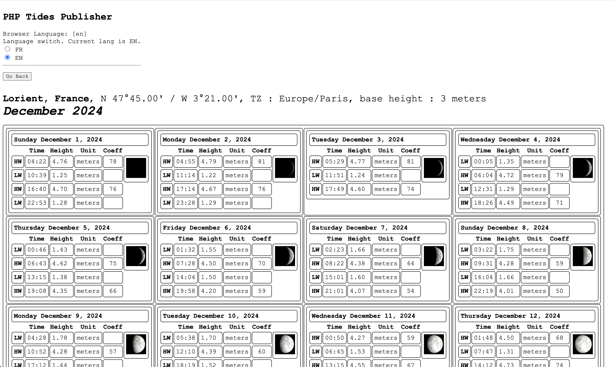
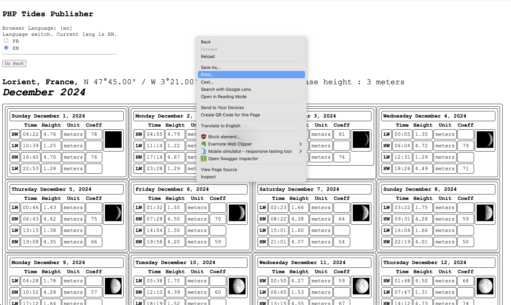
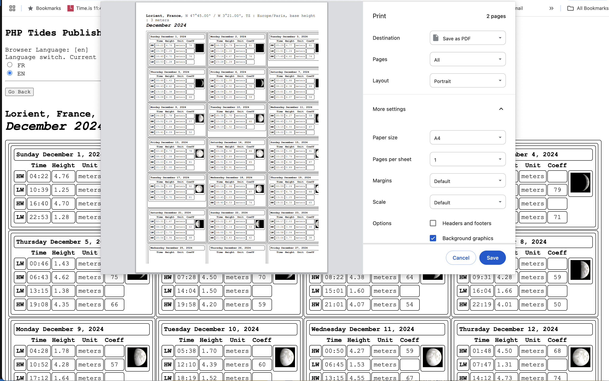
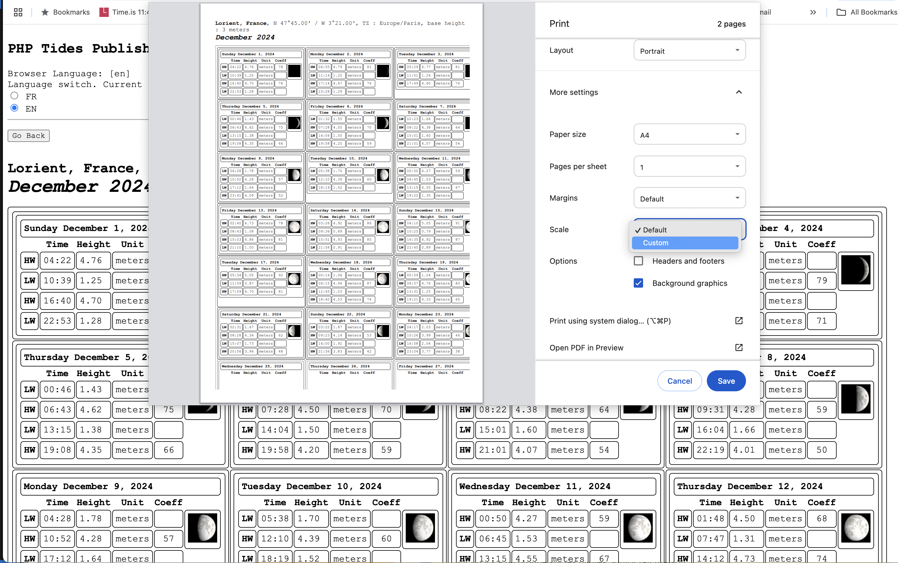
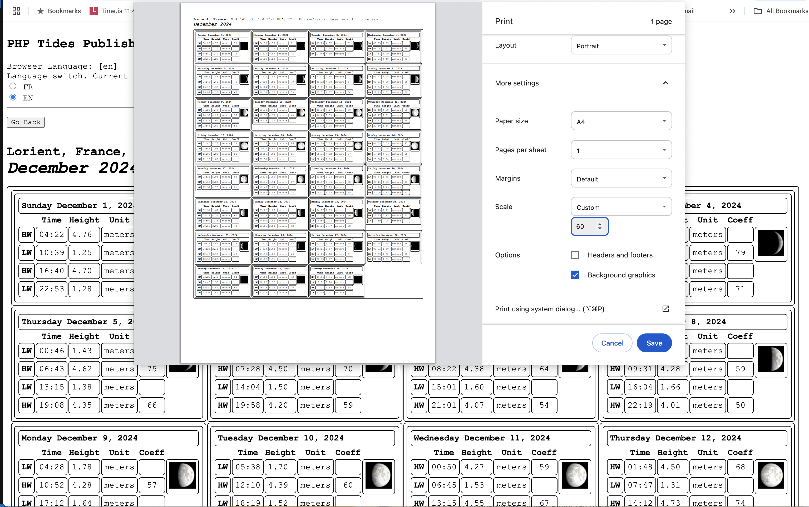

Let's take an example, like the Tide Publishing.
We've generated a one month tide almanac for Lorient, here is what the page looks like in the browser once completed.

Now, and this is where it is interesting, we want to print the content of this page (as a pdf here), so it fits on one printed page.
On the page, do a right-click with the mouse, a menu is going to show up (here, it is on Chrome, other browsers may look slightly different, but
the feature will be here. If not... well upgrade your browser!).
In the menu, choose "Print".

A new dialog will show up, in which you'll see two main things:
What your document is going to look like when printed
A list of the options you can use to tweak it
We choose to "Save as PDF", in the first line.
Here, you can definitely see that the document does not fit in the page.
Let us use the scale to fix that.
You can notice that here, the printed document does not 100% match the displayed one.
This happens on purpose, thanks to the CSS (Cascading Style Sheets) associated with the document.
There could be in the displayed version some elements meaningless in the printed version (like links to other sites),
and vice-versa (like page-breaks).

For the scale, instead of "Default", we will choose "Custom".

And then, adjust the scale value until the data fit in a page!
Here, "60" seems to do the job.
You can now click the "Save" buttom, your pdf file is ready to be save on your file system!

All other options in the list are also ready for you to play with them!
Go ahead!
We've generated a one month tide almanac for Lorient, here is what the page looks like in the browser once completed.